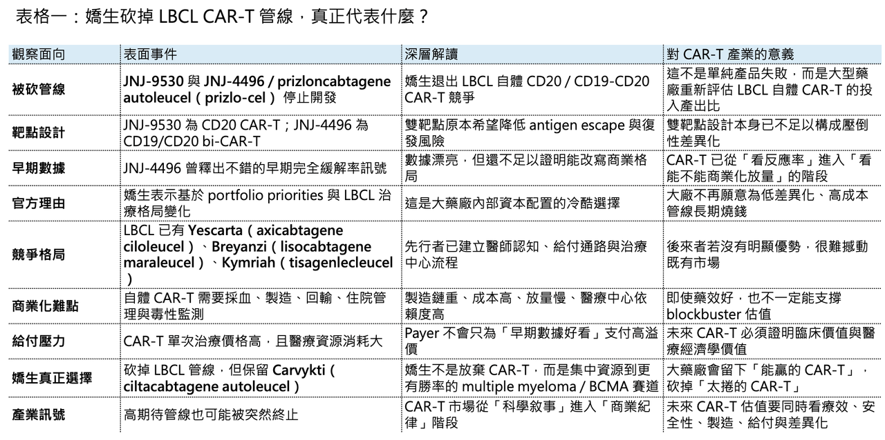

【嬌生 CAR-T 戰略折戟：不是數據不夠漂亮，而是自體 CD19/CD20 CAR-T 的商業死循環開始反噬】
📌 誰能想到，幾個月前還被 Johnson & Johnson 管理層高度看好的淋巴瘤 CAR-T 管線，會在 2026 年 4 月底被突然送進歷史檔案夾。

這不是普通的管線微調。
Johnson & Johnson 宣布停止開發兩款 large B-cell lymphoma（LBCL）CAR-T 療法：一款是 CD20 mono CAR-T，另一款是 CD19/CD20 bi-CAR-T，也就是外界熟知的 JNJ-4496 / JNJ-90014496（prizloncabtagene autoleucel, prizlo-cel）。公司給出的官方理由很克制：這是基於「portfolio priorities」以及對「evolving large B-cell lymphoma treatment landscape」的評估所做出的策略性商業決策。換句話說，這不是單純臨床失敗，而是強生判斷這條賽道即使成功，也未必值得繼續燒錢。
這件事真正震撼的地方在於：JNJ-4496 不是一條毫無數據的管線。
2025 年 6 月，Johnson & Johnson 才在 EHA 發表 JNJ-4496 的 Phase 1b 數據，將它描述為一款 dual-targeting anti-CD19/CD20 bispecific autologous CAR-T，用於 relapsed / refractory large B-cell lymphoma。當時資料釋放出的訊號相當漂亮，也讓外界一度認為它有機會成為下一代淋巴瘤 CAR-T 的核心競爭者。
然而不到一年，嬌生選擇全線停手。這代表什麼？自體 CD19/CD20 淋巴瘤 CAR-T 的商業模式進入最殘酷的下半場。過去大家只問一個問題：你的 CR rate 夠不夠高？
現在大藥廠問的是另一個問題：你的療效優勢，足不足以支付製造成本、臨床開發成本、商業化複雜度、給付阻力，以及未來與既有產品和下一代療法競爭的全部代價？嬌生這次的答案很明確：不值得了。

01｜從「best-in-disease」到被終止：自體 CAR-T 的殘酷落差
JNJ-4496 的故事，本來非常符合下一代 CAR-T 的敘事模板。
🧬 第一，CD19 已經被驗證。
🧬 第二，CD20 也是 B-cell lymphoma 的經典標靶。
🧬 第三，雙靶點理論上可以降低 antigen escape。
🧬 第四，Johnson & Johnson 不是小公司，它有 Carvykti 的商業化與細胞治療經驗。
🧬 第五，早期臨床數據看起來確實不差。
這樣的組合，放在 2021 或 2022 年，幾乎會被市場直接貼上「下一個 blockbuster CAR-T」標籤。但 2026 年的市場，已經不是那個市場。
LBCL 的自體 CAR-T 賽道，早就不是藍海。
Yescarta（axicabtagene ciloleucel） 已經在 large B-cell lymphoma 的二線治療建立地位；FDA 早在 2022 年即核准 axicabtagene ciloleucel 用於一線 chemoimmunotherapy 後 12 個月內復發或 refractory 的成人 LBCL。這代表 CD19 CAR-T 已經不是最後線奇兵，而是開始前移到更早治療線。
Breyanzi（lisocabtagene maraleucel） 也持續擴張適應症與使用場景。Kymriah（tisagenlecleucel） 雖然商業表現不如前兩者，但也早已完成第一代市場教育。這些產品共同把 CD19 CAR-T 的療效門檻、醫師認知與給付討論拉到一個很高的位置。
因此，JNJ-4496 就算早期 CR rate 好看，也必須回答一個更難的問題：它到底比現有 CD19 CAR-T 好在哪裡？
是更持久？更安全？更便宜？更快？更容易製造？能門診給藥？能顯著降低 relapse？能直接進二線甚至一線？還是能打出 payer 願意額外付費的清楚差異？如果答案只是「雙靶點、反應率漂亮」，那在今天已經不夠了。
02｜這不是臨床失敗，而是商業模型失敗
嬌生沒有說這兩條管線因安全性或療效問題被砍。它說的是 portfolio priorities 和 evolving LBCL landscape。這句話很官方，但翻譯成產業語言，就是：這個市場已經捲到投入產出比不划算。
自體 CAR-T 最大的問題，從來不只是科學。它是一個非常重的商業系統。
💰 病人要 leukapheresis。
💰 細胞要送去製造。
💰 製造要等數週。
💰 患者可能需要 bridging therapy。
💰 產品要回輸。
💰 醫院要有細胞治療中心。
💰 醫師要管理 CRS、ICANS、感染、血球低下。
💰 保險要預先核准。
💰 給付要談判。
💰 製造失敗與物流風險要吸收。
這一整套系統，決定了自體 CAR-T 很難像小分子或抗體一樣自然放量。更致命的是，LBCL 已經有多個成熟 CAR-T 產品。當一個新產品進場時，不能只證明「我有效」，而是要證明「我值得整個醫療系統重新為我安排流程」。這就是自體 CD19/CD20 CAR-T 的死循環：療效要更好，所以設計更複雜。設計更複雜，製造更難、成本更高。成本更高，就需要更高價格或更大市場。但市場已經有 Yescarta、Breyanzi 等先行者，醫院與 payer 不會輕易給新產品超額溢價。如果無法顯著降低成本或顯著改善臨床結局，商業化回報就撐不起開發投入。嬌生這次砍管線，砍的不是一個藥。它砍的是這個死循環。
03｜雙靶點不是免死金牌
🎯 JNJ-4496 的設計邏輯很直覺：同時靶向 CD19 與 CD20，希望降低單一抗原逃逸造成的復發。
這個科學邏輯沒有錯。Gilead / Kite 也在做類似方向。Kite 的 KITE-363 與 KITE-753 都是 autologous anti-CD19/CD20 CAR-T，正在 relapsed / refractory B-cell lymphoma 中進行 Phase 1/2 研究。Gilead 的公開臨床試驗資料也明確指出，PALISADES-1 正是在評估 KITE-363 或 KITE-753 的安全性與療效。
所以，嬌生退場不代表 CD19/CD20 雙靶點完全沒戲。
但它代表雙靶點本身已經不是足夠差異化。如果大家都知道 CD19/CD20 可能解決 antigen escape，那麼市場接下來比較的就不是「你是不是雙靶點」，而是：
💰 誰製造更穩？
💰 誰毒性更低？
💰 誰劑量更低？
💰 誰能門診？
💰 誰能用更少中心推廣？
💰 誰能更快從 leukapheresis 到回輸？
💰 誰能在真實世界維持和臨床試驗接近的療效？
💰 誰能讓 payer 相信多花錢值得？
在這個比較框架下，JNJ-4496 即使數據漂亮，也未必能形成壓倒性優勢。這就是為什麼「科學上合理」和「商業上值得」之間，現在出現了非常大的裂縫。
04｜嬌生不是放棄 CAR-T，而是把籌碼集中到更有勝率的地方
🧭 要注意，Johnson & Johnson 並沒有完全退出 CAR-T。它仍然有 Carvykti（ciltacabtagene autoleucel）。Carvykti 是 J&J 和 Legend Biotech 合作開發的 BCMA CAR-T，用於 multiple myeloma。它在多發性骨髓瘤市場已經建立非常強的臨床與商業位置。J&J 2026 年第一季財報顯示，公司 Innovative Medicine 業務持續由 oncology 推動成長，Carvykti 也被多家市場觀察者視為其未來重要增長產品之一。
所以強生不是「看空所有 CAR-T」。它是在做更精確的資本配置：多發性骨髓瘤的 BCMA CAR-T，仍然值得打。而高度內卷的 LBCL 自體 CD19/CD20 CAR-T，不值得再花大錢硬拚。這個差別很重要。
大型藥廠現在不是沒有錢，而是更不願意為低差異化產品支付高昂開發成本。尤其在 CAR-T 這種製造與商業化極度複雜的領域，僅僅有漂亮早期數據，已經不足以讓總部一路放行。過去是「有療效就能融資、能授權、能講 blockbuster」。現在是「有療效之後，還要證明你有可放大的商業化路徑」。這就是後疫情時代 CGT 投資邏輯最大的變化。
05｜LBCL 自體 CAR-T 正在從「拼數據」變成「拼生存」
LBCL CAR-T 的競爭正在進入一個更殘酷的階段。早期時代，CD19 CAR-T 是革命性療法。只要能讓 refractory lymphoma 患者達到深度緩解，就足以震撼市場。但現在，標準變了。
醫師已經知道 CAR-T 會有效。患者也知道 CAR-T 是一種選擇。醫院也已經建立部分流程。payer 也已經看過這類產品的價格與真實世界成本。因此，後來者必須拿出更硬的東西。不是 20 個病人的 CR 率。不是單臂 Phase 1b 的漂亮 waterfall plot。不是「可能 best-in-disease」的口號。而是可被 payer、醫院、指南與真實世界醫療系統共同接受的綜合優勢。
這包括：
⚖️ 更長的 PFS / OS。
⚖️ 更低的 ICU 與住院需求。
⚖️ 更低 CRS / ICANS 管理負擔。
⚖️ 更短製造週期。
⚖️ 更低製造失敗率。
⚖️ 更明確的二線或一線定位。
⚖️ 更簡單的給付理由。
⚖️ 更能與現有 bispecific antibodies、ADC、T-cell engagers 和新型免疫療法區分。
如果這些都沒有，早期數據再漂亮，也可能只是昂貴的科學樣品。嬌生這次退場，就是給整個產業上的一課：CAR-T 不是不能做，而是不能再用 2020 年的故事去融 2026 年的錢。
06｜最該被重估的，是自體 CD19 CAR-T 的BD 大藥廠預期
🌏 這件事說的直接一點：自體 CD19 CAR-T，基本不應該再被賦予明顯大藥廠 BD 預期。
產業格局已經變了。連 Johnson & Johnson 這種等級的藥廠，面對一條早期數據不差、CD19/CD20 雙靶點設計、曾被視為潛在 multi-billion asset 的 LBCL 自體 CAR-T，都選擇因為 portfolio priority 和 evolving landscape 退場，那一般生技公司一個相對小規模、缺乏全球 CAR-T 商業化網絡、缺乏大規模 GMP 製造經驗、缺乏國際多中心註冊性試驗能力的自體 CD19 CAR-T，憑什麼還能期待大藥廠的高價 BD？
大藥廠現在逃離的，不是所有細胞治療。
它們逃離的是這種 高成本、重製造、低差異化、競品成熟、給付困難、放量受限 的自體 CAR-T 死循環賽道。自體 CD19 CAR-T 如果還停留在「我們也有 CD19 CAR-T」、「我們在可以做」、「我們有臨床經驗」這種敘事，大藥廠 BD 幾乎沒有想像空間。因為海外買家不缺 CD19 CAR-T。他們缺的是：能顯著降低製造成本的技術。
能縮短 vein-to-vein time 的平台。
能做 allogeneic 或 in vivo CAR-T 的底層能力。
能在自體免疫疾病中免疫重置的安全方案。
能用新遞送技術繞開傳統細胞製造流程的下一代產品。
能在特定市場形成真實現金流與病人資料的區域解法。
換句話說，自體 CD19 CAR-T 的合理價值，不應該放在「授權給 MNC」這個故事上。它比較可能的定位，是某些區域型醫療服務、特管或再生醫療制度下的在地治療方案、細胞製備能力、醫院合作網絡，或是作為未來更高階細胞治療技術的製造基礎。這和 BD給大藥廠 是兩回事。
07｜下一代 CAR-T 的錢，正在流向哪裡？
嬌生砍掉 JNJ-9530 和 JNJ-4496，不代表資本完全離開 CAR-T。它只是從成熟內卷的自體 CD19 LBCL 賽道，轉向更有結構性突破機會的地方。
🚀 第一，是 in vivo CAR-T。
Eli Lilly 連續收購 Orna Therapeutics 和 Kelonia Therapeutics，就是最清楚的訊號。大藥廠真正想要的，是繞開傳統自體 CAR-T 製造流程，直接在病人體內完成 T cell engineering。這才是顛覆成本結構的路。
🚀 第二，是 allogeneic CAR-T。
雖然異體 CAR-T 過去一直被持久性、免疫排斥與安全性困擾，但如果能解決這些問題，它的即用型與規模化潛力遠高於自體療法。
🚀 第三，是 autoimmune CAR-T / immune reset。
SLE、myositis、systemic sclerosis、multiple sclerosis 等自體免疫疾病，正在成為 CAR-T 新敘事。這裡的市場邏輯不是殺腫瘤，而是重置免疫系統。相較高度內卷的 LBCL，這是大藥廠更願意提前卡位的新戰場。
🚀 第四，是 CAR-T 與 bispecific antibodies 的重新分工。
在某些血液瘤中，bispecific antibodies 的即用性、成本與可及性正在挑戰 CAR-T。未來 CAR-T 必須證明自己在深度緩解與長期疾病控制上有無可取代的地位。
這才是 CAR-T 的下一個十年。不是每個 CD19 CAR-T 都值得投。不是數據漂亮就能出大藥廠BD的。不是每條漂亮早期數據都能變成百億市場。
【結語｜強生砍掉的不是希望，而是幻想】
✨ Johnson & Johnson 這次停掉 JNJ-9530 與 JNJ-4496，表面上是一場管線調整，實際上是整個 CAR-T 產業進入成熟期後的一次現實教育。它告訴我們三件事。
第一，漂亮早期數據不等於商業成功。
第二，自體 CAR-T 的成本、製造與給付問題，會吞掉很多看似美麗的臨床故事。
第三，沒有壓倒性差異化的自體 CD19/CD20 CAR-T，BD 大藥廠預期應該被大幅重估。
自體 CD19 CAR-T 如果只是跟著全球已成熟標靶做 me-too，很難再有 BD 大藥廠想像。這條賽道不是沒有科學價值，而是大型買家已經不缺這種資產。真正值錢的，是能改變成本結構、治療場景、製造流程和疾病定位的下一代技術。嬌生這次不是宣告 CAR-T 終結。
它宣告的是：自體 CD19 CAR-T 靠早期反應率講故事的時代結束了。
接下來的 CAR-T 競爭，不再是誰的故事更熱血。而是誰能在療效、安全性、製造、給付和商業化之間，真正跑出一個能活下來的模型。
參考資料：
[0]: 各公司官網＆公開資料
[1]:
Johnson & Johnson statement on investigational programs in large B-cell lymphoma
https://www.jnj.com/media-center/press-releases/johnson-johnson-statement-on-investigational-programs-in-large-b-cell-lymphoma
www.jnj.com
[2]:
Johnson & Johnson’s dual-targeting CAR T-cell therapy shows encouraging first results in large B-cell lymphoma
Phase 1b study suggests a promising safety profile and highlights the potential of a novel dual-targeting CD19/CD20 CAR T in patients with relapsed or refractory disease 75-80% complete response rate among evaluable patients at the recommended Phase 2 dos
www.jnj.com
[3]:
Page Not Found | FDA
https://www.fda.gov/drugs/resources-information-approved-drugs/fda-approves-axicabtagene-ciloleucel-second-line-treatment-large-b-cell-lymphoma
www.fda.gov
[4]:
Study Details - Gilead Clinical Trials
Study Details - Gilead Clinical Trials
www.gileadclinicaltrials.com
[5]:
Johnson & Johnson reports Q1 2026 results, raises 2026 outlook | Johnson & Johnson
2026 First-Quarter reported sales growth of 9.9% to $24.1 Billion with operational growth of 6.4%* and adjusted operational growth of 5.3%* 2026 First-Quarter earnings per share (EPS) of $2.14 and adjusted EPS of $2.70 Company increases 2026 guidance with
www.investor.jnj.com
引用本文
若在簡報、報告或社群討論引用，建議附上 Drugnews 原文連結。
Drugnews 編輯部，〈Johnson & Johnson（嬌生）砍掉兩條 自體淋巴瘤 CAR-T〉，Drugnews｜藥時事，2026/05/17，https://drugnews.com.tw/articles/2026-05-17-jnj-auto-car-t-commercial-challenge.html